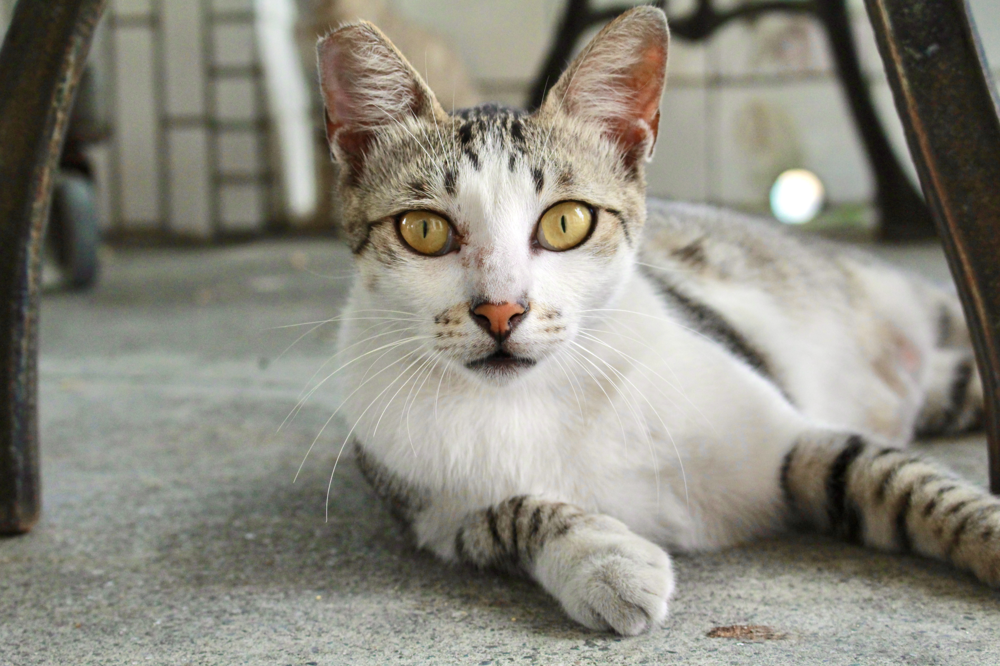

Welcome to my website!😁
I am taking a programming course with course code COMP5322 in Hong Kong Polytechnic University now.
This website is one of the projects in this course and it requires us to demonstrate HTML coding skills.
I'm going to introduce myself here and share my photos with you.
Zodiac Sign: ♓
Occupation: Field Service Engineer 🔧
Hobbies:
Photography 📷
Yoga 🧘
Travel ⛵
Gourmet 🍰
Video Gaming 🎮

Cherry blossom at NA college, Feb 2015
Bachelor of Biomedical Engineer (2014 - 2019)
 |
I've been learning and practising aerial yoga for around 2 years. |
||
I bought my very first single len camera when I was 18 years old. But it was stolen when I was travelling in Paris 4 years ago😭. |
 | ||
I am also a video game and PC game lover. After leaving school, I play games less often than before. Still, I spend much time watching international e-sport competitions. |